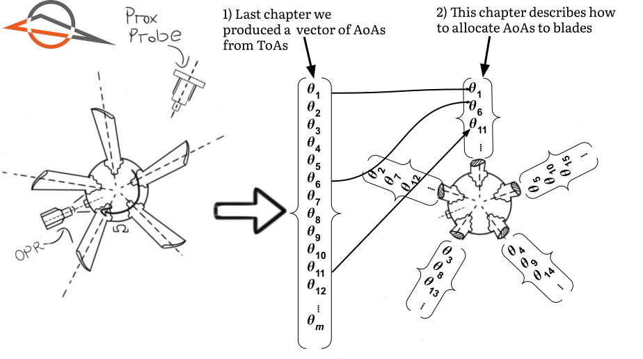
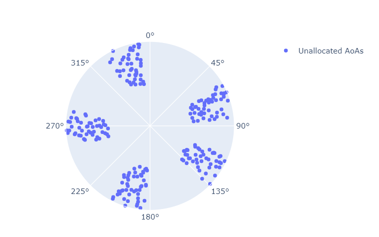
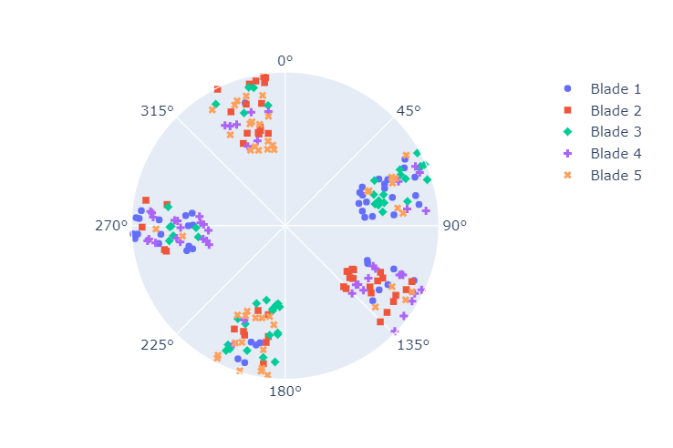
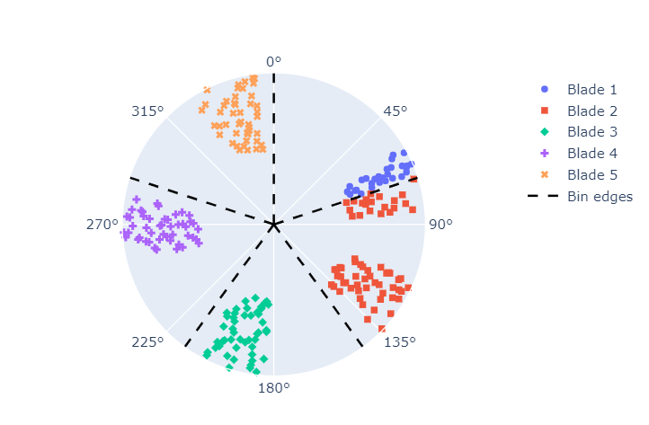
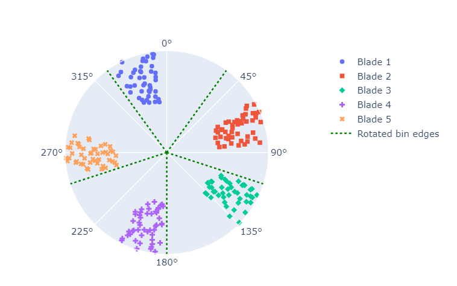

You are here
Allocating AoAs to blades
Taxonomy is the discipline of classifying entities. It is usually associated with the biological sciences. It is, however, a useful concept in many fields.
This chapter deals with the taxonomy of AoA values. What exactly needs to be classified? We need to classify the AoAs into bins, such that each bin contains the AoAs of a single blade.
Here's an illustration of what we've covered so far, and what we're about to cover:

Figure 1 restates that we converted ToAs into AoAs in the previous chapter. We still only have a large, unstructured array of AoAs. In this chapter, for the first time, we use information specific to the rotor: the number of blades.
It may seem overly redundant to dedicate an entire chapter to identify which AoAs belong to which blades. Is it not obvious that the second blade arrives after the first? This may sometimes be the case, but it is too simplistic an approach. It's the kind of solution a Large Language Model(LLM) like ChatGPT would give. Real engineering problems do not bend to the whims of LLMs.
This chapter develops a robust methodology to assign AoAs to specific blades. Giving yourself permission to study the fundamentals will pay dividends in the future.
First attempt
Let's generate example data to help us explore the problem space. I've generated AoAs for a 5 blade rotor using the code below. Do not get bogged down in the details of this code. The important thing is that we have 5 blades and one sensor. This produces a vector of AoAs.
import numpy as np
import pandas as pd
delta = -20
blade_means = np.deg2rad([72, 144+delta, 216+delta, 288+delta, 360+delta])#(1)!
aoa_values = []
BLADE_COUNT = 5
# Set random seed for reproducibility
np.random.seed(0)#(2)!
for n in range(50):#(3)!
r = 0.5 + 0.5/50 * n#(4)!
for b in range(BLADE_COUNT):
aoa_current = blade_means[b] + np.random.uniform(-np.pi*0.07, np.pi*0.07)#(5)!
# Reject values with probability < 0.05
if np.random.rand() > 0.05:#(6)!
aoa_values.append({
"n" : n,
"aoa" : aoa_current,
"plot_r" : r,#(7)!
})
df_aoas = pd.DataFrame(aoa_values)
-
We specify the mean AoA for each blade. We also specify a
deltavalue that we use to shift the mean AoA for blades 2 through 5.This is to simulate the effect of blades that are not perfectly equidistant from one another. Our example shifts all except the first blade by 20 degrees. This is an extreme amount to shift. In practice, the blades will be more-or-less equidistant from one another. We use this
deltato showcase the complexity introduced by non-equidistant blades. -
We set the random seed to ensure reproducibility. It ensures that our random values are the same every time we run the code.
- We generate data for 50 shaft revolutions. Why 50? It's an arbitrary number that helps us make our point.
- This
radiusvalue has no physical meaning. It is simply a value that enables us to plot the AoAs on a polar plot. It is not related to the radius of the rotor. - We generate a random AoA value for each blade, as if it passed by the proximity sensor. We add a random value between \(-\pi \times 0.07\) and \(\pi \times 0.07\) to the mean AoA value. This is to simulate the effect of noise and vibration. Why \(-\pi \times 0.07\) and \(\pi \times 0.07\)? Once again, these values are arbitrary but sufficient to illustrate the point.
- We reject 5% of the AoAs. This is to simulate the effect of 'missing pulses' in our data. Our BTT DAQ should, in theory, be able to capture all the pulses. In practice, however, this is often not the case. We need to develop an algorithm that can handle missing ToAs.
- We reiterate that the
radiusvalue has no physical meaning. It is simply a value that enables us to plot the AoAs on a polar plot.
The AoAs are plotted in Figure 2 below.

In Figure 2 above, there are five distinct "groups" of AoAs. Intuitively, we expect each group to correspond to a blade. We now develop an algorithm to assign each AoA to a blade.
Sequential allocation
To help us reason through the first approach, the first 10 AoAs are presented in Table 1 below:
| n | aoa | plot_r |
|---|---|---|
| 0 | 1.27811 | 0.5 |
| 0 | 2.20941 | 0.5 |
| 0 | 3.38727 | 0.5 |
| 0 | 4.65003 | 0.5 |
| 0 | 6.13805 | 0.5 |
| 1 | 1.38494 | 0.51 |
| 1 | 2.19414 | 0.51 |
| 1 | 3.23218 | 0.51 |
| 1 | 4.46646 | 0.51 |
| 1 | 6.05646 | 0.51 |
Humans excel at pattern recognition. From Table 1 above, it's clear the AoAs arrive in a sequence. Each AoA in the table seems to increase by \(\frac{2 \pi}{5}\) radians until the fifth value, after which the pattern repeats itself. It seems obvious that we should be able to allocate the AoAs sequentially. In other words, blade 1's AoA is located in row 1, then blade 2, and so on.
A reasonable strategy would be to assign every 5th AoA to the same blade:
df_aoa_sequential = df_aoas.copy(deep=True)
df_aoa_sequential['blade'] = None
df_aoa_sequential.loc[::5, 'blade'] = 1 #(1)!
df_aoa_sequential.loc[1::5, 'blade'] = 2
df_aoa_sequential.loc[2::5, 'blade'] = 3
df_aoa_sequential.loc[3::5, 'blade'] = 4
df_aoa_sequential.loc[4::5, 'blade'] = 5
[::5]is Python notation for "select every 5th value".
Every AoA is now assigned. We can therefore use a different style marker to discern between the assigned groups. The results are displayed in Figure 3 below.

Figure 3 is a disaster. 
We would expect five distinct groups clustered around different circumferential areas. Rather, each AoA group has members spread out over the entire circumferential range from 0 to 360 degrees.
Why did this happen? Because we introduced "missing pulses" when we generated the AoAs. If only one pulse is missing, all of our AoAs will be incorrectly grouped. This is a common problem in BTT analysis. We must therefore develop a sequence-independent algorithm.
Binned allocation
Let's rather group the AoAs into angular bins. We create five equally spaced bins and slice the AoA vector up into these bins. The first bin's edge starts at 0 degrees. Each bin is \(\frac{360}{5}\) degrees wide.
The allocation is performed below:df_aoa_binned = df_aoas.copy(deep=True)
df_aoa_binned['blade'] = None
bin_edges = [0, 72, 144, 216, 288] #(1)!
bin_edges_rad = np.deg2rad(bin_edges) #(2)!
for b, bin_left_edge in enumerate(bin_edges_rad): #(3)!
bin_right_edge = bin_left_edge + 2*np.pi/5 #(4)!
ix_in_bin = (
(df_aoa_binned['aoa'] >= bin_left_edge)
& (df_aoa_binned['aoa'] < bin_right_edge)
) #(5)!
df_aoa_binned.loc[ix_in_bin, 'blade'] = b + 1 #(6)!
- We specify the left edges of the bins. They are all equally wide.
- We convert from degrees to radians to get them to the same unit as the AoAs.
- The
enumeratefunction returns the index and left edge of the bin we are currently considering. - We calculate the position of the right edge. It's always \(\frac{2 \pi}{5}\) radians larger than the left edge.
- We create a boolean mask to identify the AoAs that fall within the bin we are currently considering.
- We use the mask to allocate the appropriate AoAs to its corresponding blade.
The groups are plotted in Figure 4 below. The group edges have been added to the plot.

Figure 4 above is a significant improvement over Figure 3. The groups seem more sensible.
However, some of blade 1's AoAs are grouped with blade 2. This is because the AoAs from blade 1 fall close to the first bin's edge. We cannot control where the AoAs fall. It is a function of the rotor's blade count and the location of our OPR sensor. Our algorithm should be able to adapt to this.
Rotated bin allocation
Instead of the first bin starting at 0 degrees, we subtract an offset to each edge. Let's subtract an offset. We call the offset d_theta. Let's set d_theta equal to half the current bin width, 72°/2 = 36°, for this example.
The code to perform the allocation is similar to the previous example. We need, however, to include a second mask to check for the AoAs close to the 0°/360° boundary. We'll discuss this in more depth later in the chapter.
- The second mask to check for AoAs close to the 0°/360° boundary.
We plot the result in Figure 5 below.

 .
.
Finally our allocation is perfect. The AoAs from each blade are grouped together. This is the allocation we always want to achieve.
In this example, we've manually chosen the offset. We would rather use an algorithm to automate the process.
How can we determine the quality of the allocation? Intuitively, we expect the AoAs from each blade to occur in the middle of its bin. The closer it is to an edge, the higher the likelihood of misclassification.
This chapter therefore develops an algorithm to identify the optimal offset, d_theta. The optimal offset causes each bin's AoAs to be located in the middle of the bin.
Outcomes
Calculate the optimal d_theta to group the AoAs into blade bins by minimizing a quality factor \(Q\).
Understand that the first blade may arrive close to the OPR zero-crossing time. This can make the blade appear either at the start or end of the revolution. We need to cater for this scenario.
Write a function that determines the optimal blade bins for a set of AoAs, and split the proximity probe AoA DataFrames into several individual blade DataFrames.
Follow along
The worksheet for this chapter can be downloaded here .
You can open a Google Colab session of the worksheet here:  .
.
You need to use one of these Python versions to run the worksheet:


 .
.
Load the data
We load the same dataset that we used for Chapter 3. We only get the AoAs from the first probe and store it in df_prox_1.
Our algorithm
We've discussed that a "good" allocation is one where the AoAs from each blade occur close to the center of its bin. To quantify this intuitive approach, we create a quality factor, \(Q\).
\(Q\) is the sum of squared errors between the center of each bin and each AoA within it.
Symbols
| Symbol | Description |
|---|---|
| \(Q\) | The blade bin quality factor |
| \(\delta \theta\) | d_theta, the offset we apply to the bin edges |
| \(b\) | The blade index |
| \(B\) | The total number of blades |
| \(n\) | The index of the AoA inside bin \(b\) |
| \(N\) | The total number of AoAs inside bin \(b\) |
| \(\hat{AoA}_{b}\) | The center AoA of bin \(b\) |
| \(AoA_{b, n}\) | The \(n\)th AoA inside bin \(b\) |
Below, we show the domains of the variables for this example:
The below function calculates Q for a given blade number and offset. I've added detailed comments that can be opened by clicking on the symbols. If they do not open, please refresh the page.
-
Initialization
In lines 1 - 4, the function name and input arguments are defined.arr_aoasis a numpy array of AoAs, in radians,d_thetais our guess for the shift to apply to the "standard" edges, andNis the number of blades.In Line 5, we specify the function's return type. It's a tuple - a fancy word for an immutable list - with two values:
Qandbin_edges.Qis the quality factor, andbin_edgesare the edges caused by this choice ofd_theta.In Line 6, we calculate the
bin_edgesbased on the choice ofd_theta.In Line 7, we initialize the quality factor to zero.
-
Identify the AoAs inside each bin
In Line 7, we enter our main loop, whereby we will consider each bin in turn.
In lines 8 and 9, we select the left and right edges of the current bin.
In Line 10, we determine which AoAs fall within the current bin.
bin_maskis a boolean array, with the same length asarr_aoas. If the mask has a value ofTrueat a given index, it means the corresponding AoA value falls within the current bin. -
Determine each bin's Q factor contribution
In Line 12, the center of the bin is calculated. This is \(\hat{AoA}_{b}\) in Equation 1.
In lines 13 - 18, we calculate the squared difference between each AoA and its corresponding bin's center. We sum these squared differences and add it to \(Q\). If the centre is close to the AoAs, \(Q\) will not increase much. If the centre is far from the AoAs, \(Q\) will increase significantly.
-
Sanity checks and return
We've added sanity checks to the function. Why is it necessary to add sanity checks? Our code in lines 8 to 19 only consider AoAs between the left and right edges of the current bin. The offset
d_thetawill shift the edges such that some AoAs do not fall within any bin.For instance, if
d_thetais -10°, the last bin's right edge will be at 350°. If the final blade is clustered around 355°, our algorithm will not consider it in the \(Q\) factor because every value in ourbin_maskwill beFalsefor anything above 350°.We therefore check, in lines 20 and 22, if
d_thetais valid.d_thetais invalid if any AoAs occur outside the far left or right bin edges. We returnnp.nanforQto indicatedthetais invalid.Finally, in Line 24, we return
Qandbin_edges.
Implementation example
We can now calculated \(Q\) for a range of possible d_thetas. We perform the calculation for d_thetas between \(-\frac{\pi}{5}\) and \(\frac{\pi}{5}\). This shifts the "standard" bins left and right by a maximum of 72°.
The \(Q\) factor for each d_theta is calculated below.
- The number of blades.
- We specify the range of offsets to consider. We'll consider 200 offsets between \(-\frac{\pi}{5}\) and \(\frac{\pi}{5}\).
- We convert the AoA DataFrame into a Numpy array because our function does not work with a Pandas series.
- We initialize an empty list to store the quality factors.
- We initialize the optimal Q value to infinity. This is a trick to ensure the first value we calculate is always the optimal value. It can be unseated by a better value later.
- We iterate over the range of offsets to consider.
- If the quality factor we just calculated is less than the best value so far, we update all the "optimal" values.
- We append the quality factor to a list. This will be used to plot the quality factor as a function of the offset.
The Q factor for each d_theta is plotted in Figure 6 below.
And voila! The optimal offset is -20.08 degrees.
How to choose the offset count
I've selected 200 values between \(-\frac{\pi}{5}\) and \(\frac{\pi}{5}\) to search through. The choice of 200 is arbitrary, you can choose your own value. You need to ensure, however, your grid is fine enough to capture the optimal offset. If you choose too few values, you may miss the optimal offset. If you choose too many values, you may waste time.
The effects of non-equidistant probe spacing
At this stage it may be unclear how probe spacing affects our analysis. Especially, how non-equidistant probe spacing affects our analysis.
I cannot stress this enough: The algorithm we've developed here is only applied to AoAs from one probe. Multiple probes are combined using a different approach, which we discuss in the next chapter.
Why not use an optimization algorithm
To find the optimum d_theta, we've resorted to a simple one dimensional grid-search algorithm. This is because the problem is simple.
We could use a more sophisticated optimization algorithm, but it would be overkill for this problem.
One DataFrame per blade
Now that we have the optimal bin edges, we cut the proximity probe AoA DataFrame into separate DataFrames for each blade:
- We initialize an empty list to store the DataFrames for each blade.
- The for loop allows us to consider each blade in turn.
ix_binis our boolean mask which indicates if the AoAs fall inside bin numberb.- We use the
.locmethod to only select the values inside binb.
Blade 0 mean: 0.280844143512115, std: 0.0014568064245125216
Blade 1 mean: 1.5390655934492143, std: 0.001784799129959647
Blade 2 mean: 2.788312464321002, std: 0.0015687549238434136
Blade 3 mean: 4.045575640802255, std: 0.0017088093157144036
Blade 4 mean: 5.305095908129366, std: 0.0014525709531342695
Finally, we have 5 DataFrames, one for each blade.
Why report the mean and standard deviation?
I use the mean and standard deviation as a check for the quality of the allocation. The mean of each blade's dataframe should correspond to the bin center. The standard deviation should be small, because all AoAs should be close to the center.
If, for some reason, your alignment is off, the standard deviations will shoot through the roof.
Blade wrap-around
Let's shift the AoAs from their original position to illustrate an extreme case. This shift is artificial. It is, however, equivalent to what would happen if we positioned the proximity probe or the OPR sensor at a different circumferential location. In short, a constant shift of the AoAs don't objectively change anything about them. We should be able to find the same \(Q\) value as we did in the previous section.
- We create a copy of our original DataFrame. In Line 2, we shift the AoAs by blade 1's mean AoA value as calculated in the previous section.
-
We've highlighted Line 3 because it is important. Our artificially constructed
df_prox_1_shiftedDataFrame from Line 2 will contain someAoAvalues that are negative.In practice our BTT system will always produce positive AoAs. These artificially shifted values should therefore appear at the end of the next revolution. To simulate this effect, we wrap the AoAs to the range \([0, 2 \pi]\) in Line 3.
-
From Line 5 onward, we repeat the same process as before to find the optimal bin edges. The only difference is we use the
df_prox_1_shiftedDataFrame instead of thedf_prox_1DataFrame.
We print the optimal \(Q\) value below.
The optimal \(Q\) is infinity and the optimal edges equals None !
We plot a histogram of the AoAs in Figure 7 below to investigate what went wrong.
This is what happens when a blade arrives at the proximity probe at approximately the same time that the OPR triggers a zero-crossing time. Some of the AoAs will appear at the end of the previous revolution, and some will appear at the beginning of the current revolution.
The algorithm we've developed will fail for such cases, because some values fall before or after the far left and right edges.
We should change calculate_Q to handle blade wrap-around.
I'll leave it to you to make this change as an exercise 👇.
Currently, calculate_Q returns nan when some blades are outside the furthest bin edges. Blade wrap-around will always trigger this response. Write an updated calculate_Q function that handles AoAs outside of the bin edges.
Reveal answer (Please try it yourself before revealing the solution)
In calculate_Q above, we've added lines of code in the 'sanity check' sections to handle AoAs outside the bin edges.
In lines 20 - 29, we check for AoAs occurring before the left most bin edge. These values are therefore treated as if they occur in the last bin.
In lines 31 - 40, we check for AoAs occurring after the right most bin edge. These values are therefore treated as if they occur in the first bin.
After you've completed the function above, create a new function performing everything this chapter covered automatically. Call the function transform_prox_AoAs_to_blade_AoAs.
This function should receive the proximity probe AoA DataFrame and the number of blades on the rotor, and return a list of DataFrames, one for each blade.
Reveal answer (Please try it yourself before revealing the solution)
We've decided to only search for the optimal d_theta value between \(-\frac{2\pi}{B}\) and 0. This is simply a matter of preference, because I want the first blade to occur as close as possible to 0 degrees. If you allow d_theta to be positive, it may result in the first blade being classified as the last blade. This is not a problem, but it is a matter of preference.
Conclusion
Blade alignment is like parallel parking - it seems so simple, but you can make a proper mess of it if you're not careful.
I've promised that, by the end of this tutorial, you'll be able to infer parameters for vibration frequency, amplitude and phase for every blade. In this chapter we've enabled the "for every blade" part. Before this chapter, we just had a massive array of AoAs with no structure to it. We now have one AoA DataFrame for every blade.
This chapter involves only a single proximity probe. BTT systems normally use multiple proximity probes.
In the next chapter, we'll combine information from multiple probes together. We'll also investigate a nice visual way to check if we've done our alignment properly: the stack plot.
Outcomes
Calculate the optimal d_theta to group the AoAs into blade bins by minimizing a quality factor \(Q\).
Understand that the first blade may arrive close to the OPR zero-crossing time. This can make the blade appear either at the start or end of the revolution. We need to cater for this scenario.
Write a function that determines the optimal blade bins for a set of AoAs, and split the proximity probe AoA DataFrames into several individual blade DataFrames.
Acknowledgements
Thanks to Justin Smith and Alex Brocco for reviewing this chapter and providing feedback.

Dawie Diamond
2024-02-20